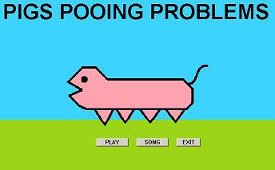

PIGS POOING PROBLEMS

Pigs pooing problems is a games where you are a pig and you can poo on things.
I have recently made a javascript version of the game. If you just want to play the game you should use this version CLICK HERE
ORIGINAL FMSLOGO VERSION
The original version of pigs pooing problems was made in FMSLogo (basicly the same as MSWLogo), but unlike other logo games you don't need to have logo to play it. this is because FMSLogo is under the GNU licence, and is included.
CLICK HERE TO DOWNLOAD THE ORIGINAL VERSION
HOW THE ORIGINAL GAME WAS MADE
If you are learning FMSLogo or MSWLogo you can download the game and see how I made it.
The main exe file in the game is actually just a compiled batch file that runs 1.exe (which changes the screen resolution) then it runs 2.exe which is FMSLogo in disguse (I chaned the programs icon and changed some of the dialogs using a hex editor - I am allow to do this because FMSLogo is under the GNU licence)
All of the games other files end in .pigg some of these files are FMSLogo programs and some are bitmaps. I changed the file extensions so it is harder to tell what they are and the program looks more professional.
So basicly what I have done is to allow users to just download my logo game just like any other game (rather than having to download FMSLogo seperately)
If you want to make a program in logo when you release it it is better to do what I have done as it looks more professional.
--------System requirements--------
Operating system: win32 (windows 95, 98, NT, XP, VIST, 7)
Computer and monitor must be able to change resolution to 800x600x32
The game will work on most computers (even slow ones)
dpi setting must be at default setting (if you have not altered the dpi setting, then it is probably already at the default setting.)
--------Copyright--------
Different files in the game have different copyright.
.pigg - all files ending in .pigg are the games files - OK i will be nice and these are now released into the public domain.
1.exe is Display Changer (C) 12noon, Stefan Tucker. you must ask Stefan Tucker for permission before reusing this.
2.exe is fmslogo (with a few hex alterations), which is under GNU GENERAL PUBLIC LICENSE V2.
Files ending in .wavv are really .wav files. These files are public domain.
You should read LICENSE.txt for full copyright information, which is included in the game download.